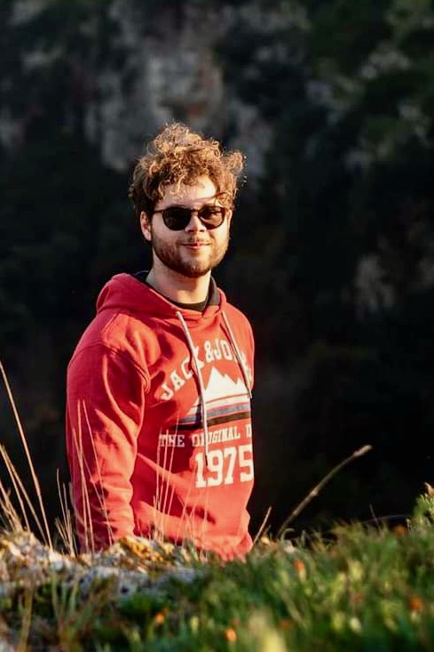

|  | Ph.D. Student, |
I received the B.Sc. degree in computer engineering and the M.Sc. degree in Telecommunications from Polytechnic University of Bari, Italy, in 2018 and 2020, respectively.
As part of a double diploma program, I also received the M.Sc. degree in computer engineering from Université Côte D'Azur, France.
As of April 2021, I am a PhD student at 3IA Côte d'Azur, Inria, France, under the supervision of Prof. Giovanni Neglia and Prof. Alain Jean-Marie.
My research interests include:
Distributed optimization for Machine Learning
Resource-awareness in Federated Learning
Energy and carbon footprint of ML training
List of the courses I am involved in as a teaching assistant:
[2021-2022] Optimization for Machine Learning